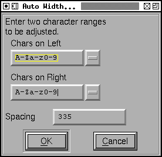
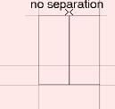

Auto Width
The Auto Width command will attempt to guess reasonable widths (more accurately reasonable left and right side bearings) for your font. The command splits the selection into scripts and looks at all possible combinations of selected glyphs within each script.
The Separation text box allows you to say how close you want the glyphs to be. If you look at a vertical bar (or sanserif "I"), and you autowidth it the sum of the left and right side bearings will be equal to the spacing. The min and max values will prevent sidebearings from becoming unrealistically large (these rarely matter).
Adjusting the left and right bearings of a letter will also adjust the left
and right bearings of all accented letters based (by reference) on it. You
should not try to use AutoWidth on accented letters directly (unless those
glyphs do not use references).
Auto Kern
There used to be an Auto Kern dialog. There is no longer, this is now done in the kerning subtable dialog and the kerning class dialog.
The python
GlyphSeparationHook
When FontForge does AutoKerning (and in a more complicated fashion, when it does AutoWidthing) it tries to guess the optical separation between two glyphs, and then it applies an appropriate kern value to make the optical separation be the desired spacing.
FontForge assumes that the optical spacing is linear (so if you increase the separation between two glyphs by 3 em-units, then the optical spacing will also increase by 3 em-units).
FF guesses the optical separation between two glyphs by figuring a value for the separation of two glyphs when their bounding boxes are adjacent. For two rectangles (where the bounding box is the same as the glyph itself) the separation will be 0 as the two glyphs will be touching. For a combination like "To" the optical separation will be quite large.
|  |  |
The GlyphSeparationHook is a python routine which will be called with a bunch of information about two glyphs, and is expected to return an integer representing the optical separation between the two. It is a low-level routine; the actual calculation of kerning offsets or setting glyph widths is done elsewhere, but this routine provides the information those higher level routines need. Of course, if you don't provide a routine, FontForge has a built-in routine which will provide a default behavior. Here is a python version of that default routine:
import fontforge;
def GlyphSeparation(onLeft,onRight,context) :
# the goal is to give a weighted average that expresses the visual
# separation between two glyphs when they are placed so their bounding
# boxes are adjacent. The separation between two rectangles would be 0
# While the separation between "T" and "o" would be fairly large
# The trick is to guess a good weighting function. My guess is that
# things that look close are more important than those which look far
# So "T" and "O" should be dominated by the crossbar of the "T"...
#
# Find the area the two glyphs have in common (so when comparing "o" and
# "l" or "g", ignore the ascenders and descenders since that's outside
# the range of "o" and won't affect its visual proximity.
imin_y = max(onRight.iminY,onLeft.iminY);
imax_y = min(onRight.imaxY,onLeft.imaxY);
#
# Some glyph combinations will have no overlap -- the grave accent and the
# letter "a" will have none. So they don't interact visually.
if imax_y < imin_y :
return( 0 )
#
# Otherwise compute some sort of weighted average of the separations between
# the two glyphs at various heights.
tot,cnt = 0,0
j = imin_y
while j<=imax_y :
if onRight.left[j] < 32767 and onLeft.right[j] > -32767 :
# beware of gaps such as those in "i" or "aaccute"
# a gap has a left or right value which is huge
# so ignore any such, again it doesn't contribute to the
# visual separation.
sep = onRight.left[j] - onLeft.right[j]
weight = 1.0/(sep + context.denom)
weight *= weight
tot += weight*sep
cnt += weight
j += 1
if cnt!=0 :
tot /= cnt
return( int(round( tot )) );
fontforge.registerGlyphSeparationHook(GlyphSeparation)
The hook will be called with three arguments, a structure with information about the glyph on the left, a structure with information about the glyph on the right, and a structure containing general information about the operation as a whole.
The context argument contains the following fields:
| font | The font being worked on |
| emSize | The emsize of the font |
| layer | The active layer for this operation |
| regionHeight | (explained below) by default emSize/100 |
| denom | 1/50th of the emSize. A number I found handy. |
FontForge preprocess all the glyphs, extracting pertinant information from each and storing it in a separate per-glyph structure than the normal python Glyph object. The most important information is a representation of the leftmost and rightmost edges of the glyph. Basically, for every value of y, FontForge finds the smallest x coordinate on any of the glyph's contours at that height and stores that information in an array. There is a similar array containing the largest x coordinates. Of course there are an infinite number of y values, so that isn't quite accurate. FontForge divides the vertical axis into many regions, each regionHeight high (this is usually 1/100th of the emsize). It then finds the smallest x coordinate achieved by any contour within that region.
The value stored in the array representing the leftmost edge of the glyph is not quite the smallest x coordinate. Instead we normalize the numbers so that the x coordinate of the left side bearing of the glyph is 0. None of the numbers in the left array will be negative.
Similarly the value stored in the rightmost array is normalized so that the glyph's right side bearing is 0. None of the numbers in the right array will be positive.
There can be gaps in a glyph -- for example in a lower case "i" there is a hole in the body of the glyph between the dot on top and the rest down below. In this case the left array will hold the special value 32767, and the right array will hold -32767.
So I don't pass a standard glyph object. The underlying glyph object can
be obtained through the glyph member. The most important things
in this structure are the arrays representing the left and right contours
called left and right. The structure also contains
the upper and lower bounds of the arrays (both arrays have the same bounds).
The glyph structures contain the following members:
| glyph | This is the standard python glyph object. This can (rarely) be None. |
| boundingbox | A tuple of 4 values (minx,miny,maxx,maxy) for the glyph |
| iminY | The low bound of the arrays. |
| imaxY | The high bound of the arrays |
| left | an array of integers representing the separation between the left edge of the bounding box and the leftmost contour at that height (never negative) |
| right | an array of integers representing the separation between the right edge of the bounding box and the rightmost contour at that height (never positive) |
iminY and imaxY are scaled by
regionHeight from the y units in the glyph itself. The value
contain at left[0] would represent minimum separation between boundingbox.minx
and any the x location of any contour when the y location was between 0 and
regionHeight. Similarly left[1] would be the minimum separation with the
y location between regionHeight and 2*regionHeight. And so forth.
imin_y = max(onRight.iminY,onLeft.iminY);
imax_y = min(onRight.imaxY,onLeft.imaxY);
if imax_y < imin_y :
return( 0 )
Here we figure out the range along the y axis where the glyphs both exist. If the two glyphs don't share any area along the y axis (as, for example, the glyph "a" and the grave accent might not) then we assume they do not interact and return a visual separation of 0.
tot,cnt = 0,0
j = imin_y
while j<=imax_y :
if onRight.left[j] < 32767 and onLeft.right[j] > -32767 :
sep = onRight.left[j] - onLeft.right[j]
weight = 1.0/(sep + context.denom)
weight *= weight
tot += weight*sep
cnt += weight
j += 1
Otherwise loop over the y range where both glyphs are active. Checking to make sure there are no holes.
We find the actual separation between the two glyphs at this y value.
Then we calculate some magic weighting function (this is handwaving. your routine will have a better weighting function)
if cnt!=0 :
tot /= cnt
return( int(round( tot )) );
And finally we take the weighted average of those separations, and return that as the optical separation.
fontforge.registerGlyphSeparationHook(GlyphSeparation)
And this routine will tell FontForge to use the hook you provide.